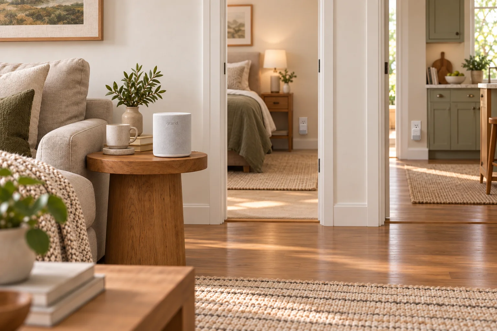

You’ll know she’s okay.
A few discreet sensors to flag when something’s off — no cameras, no wearables, nothing to charge.
The worry
Everything is probably fine... right?
Your mom lives alone and that’s not going to change. She’s doing great! She has more friends than you do, book club, hobbies... But she did have a fall last year. Every morning there’s a nagging thought in the back of your mind. What if something happened and you just don’t know it yet?
Monday 8:12 AM
Tuesday 8:04 AM
Delivered
The alternatives
You’ve probably already thought about…
A pendant or watch
Only works if she remembers to charge it and wears it all the time. Hers was on the nightstand the morning she fell.
A call-for-help button
If she does fall, it probably won’t be within reach when she needs it.
An in-home carer
It’s expensive and she doesn’t want a stranger in her home.
A camera
She’d resent you for even considering it. And you don’t want to invade her privacy anyway.
How Grand works
A small hub, a few sensors, and a sense of what an ordinary day looks like.
Grand sits quietly in the home and uses motion and audio signals to learn your parent’s normal routine — then flags when something seems off. No cameras, nothing to wear, nothing to charge.

Grand hub
This small device processes signals from the sensors and lets you know that your parent is safe, or pings you when something is off.
Grand sensors
A few small sensors that plug into any outlet and connect to the hub over Wi‑Fi. They use motion and audio detection to make sure your loved one is safe and healthy.
What Grand learns
Over the first few weeks Grand builds a picture of your parent’s normal routine, then watches for the changes that might mean it’s time to check in — and can notify you if something more serious may be happening.
-
Getting up in the morning
Grand can recognize when a wakeup time seems significantly different from the usual routine.
-
Mealtimes
Grand can identify the audio and motion signals that typically accompany meal time.
-
Trips to the bathroom
Grand can keep tabs on trips to the restroom without invading privacy with a camera.
-
Indicators of a potential fall
Most importantly, Grand can notice sudden changes in motion or audio activity that may indicate an emergency. When that happens, Grand alerts the caregiver circle so they can check in.
Caregiver experience
Feel secure knowing she’s okay
Open the app and you see today at a glance: is the day broadly normal, or is there something worth a check‑in? And in the worst‑case scenario, everyone in the caregiver circle is alerted so they can check on her directly.


When something’s wrong
You decide what happens next.
When Grand notices something you’ve asked it to watch for — a fall, or a change in her daily routine — it pings everyone in your caregiver circle right away. From there, what happens next is up to you.
-
Grand pings your circle
A fall or an unusual change in routine sends an alert to everyone in the caregiver circle.
-
Talk to her directly
Reach her through the hub and sensors — no phone for her to find, no button for her to press.
-
You decide if emergency services are needed
If she needs help, Grand gives you the right local emergency number for her area.

Early access
Peace of mind when you can’t be there
Grand will officially launch to the public later this year, but we are accepting prototype testers today (completely free). Sign up to learn more.